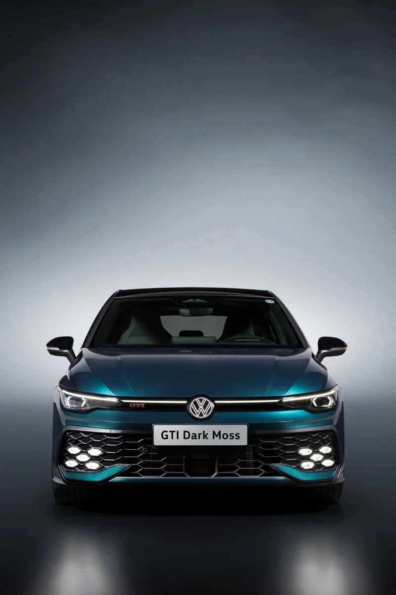
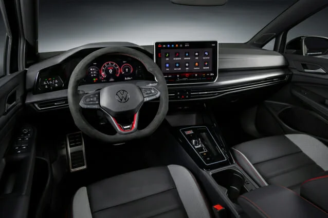
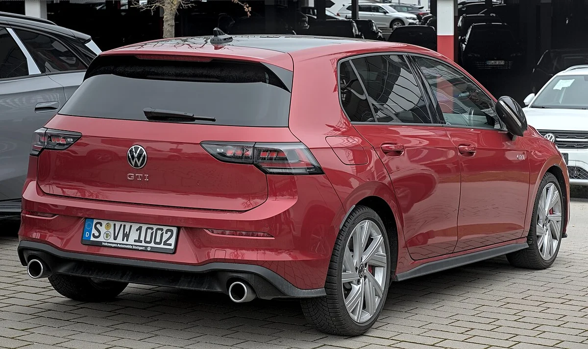
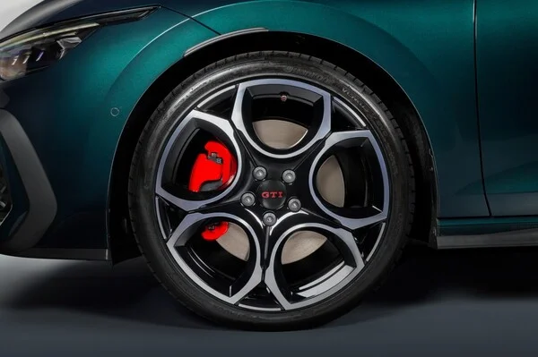
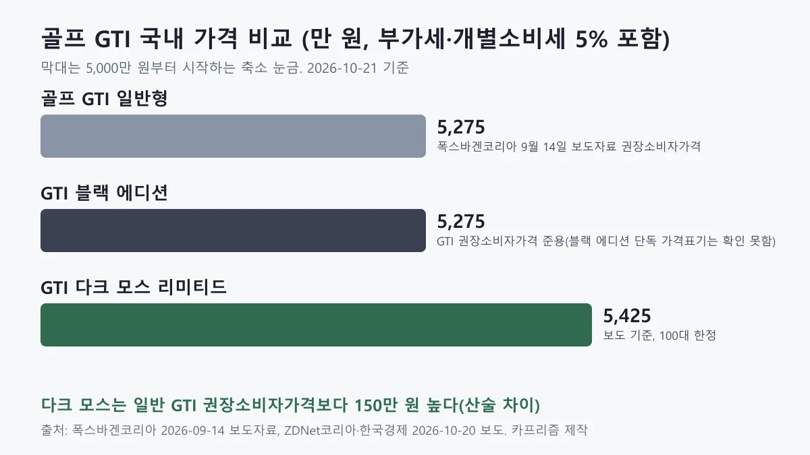
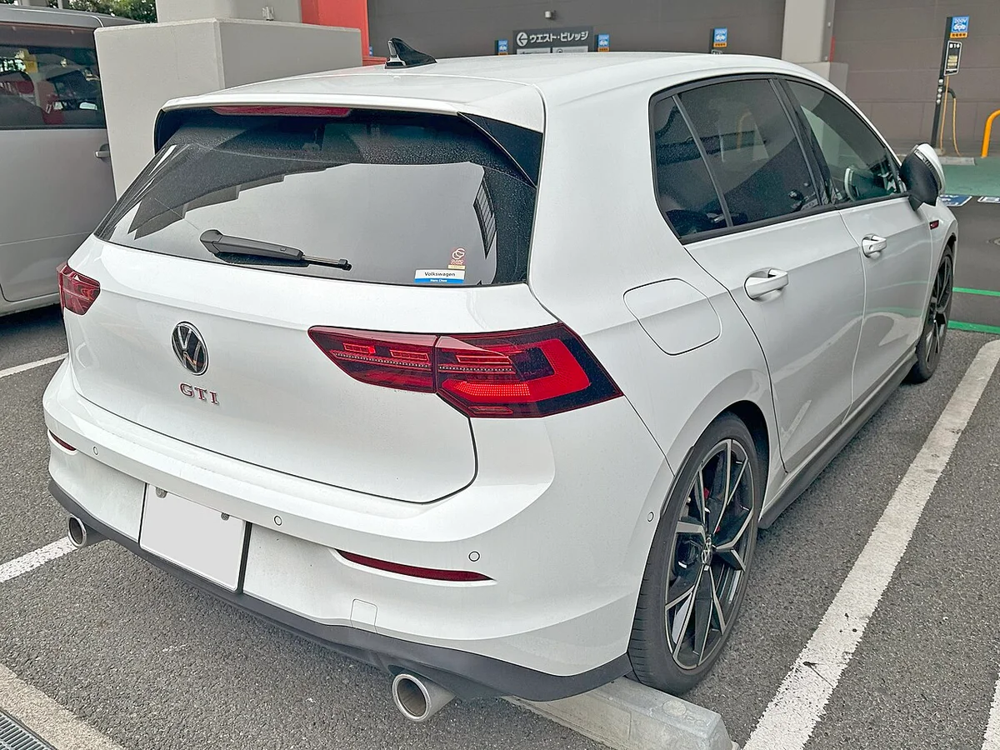
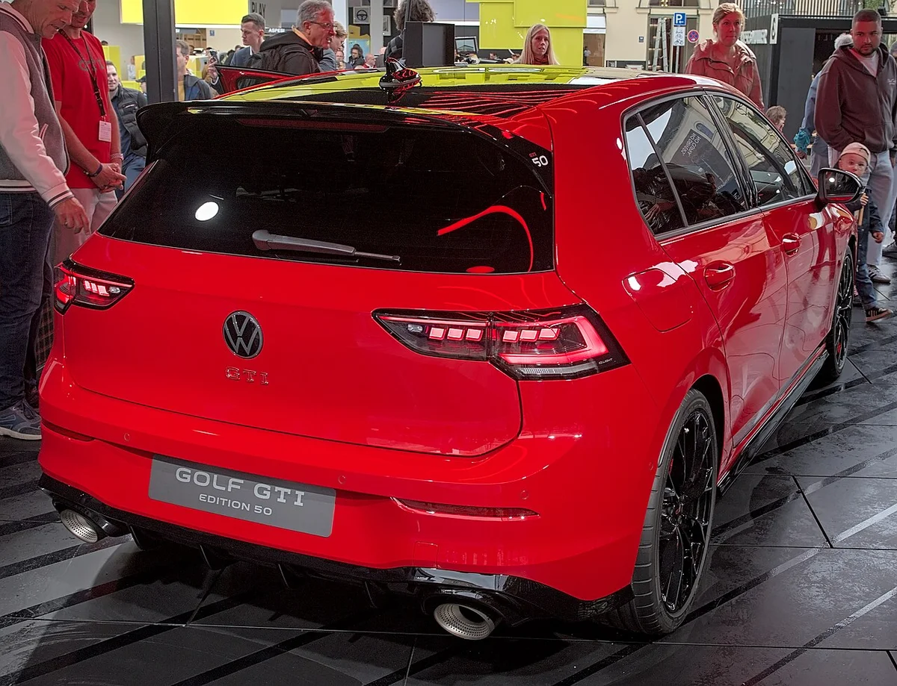

▲ 폭스바겐코리아가 공개한 골프 GTI 다크 모스 리미티드 에디션 전측면(보도 제공 사진). 촬영 조건에 따라 실제 색감은 다르게 보일 수 있다 사진=폭스바겐코리아 (ZDNet코리아 게재 보도 제공 사진, 사용자 책임 하 사용)
"한정판이라는데, 일반 골프 GTI와 뭐가 달라서 150만 원을 더 받는 걸까?" 폭스바겐코리아가 2026년 10월 20일 시작한 '골프 GTI 다크 모스 리미티드 에디션' 사전계약을 보면 이런 질문이 먼저 든다. 이 글은 보도된 가격·물량·사양을 정리하고, 같은 시기 판매 중인 일반 GTI·블랙 에디션과 무엇이 같고 다른지 따져 본다.
다크 모스의 사양과 가격은 ZDNet코리아·한국경제·카가이 등 국내 매체 보도로 확인했다. 폭스바겐코리아 뉴스룸과 모델 페이지에서는 이번 에디션 자체 보도자료를 아직 찾지 못했다(2026-10-21 확인). 그래서 가격과 혜택에는 "보도 기준"이라는 단서를 붙인다.
1. 다크 모스 리미티드 에디션, 무엇이 발표됐나
폭스바겐코리아는 GTI 글로벌 출시 50주년을 기념해 '골프 GTI 다크 모스 리미티드 에디션'을 국내 100대 한정으로 사전계약에 들어갔다. 이 차는 10월 17일 경기 용인 에버랜드 스피드웨이에서 열린 오너 행사 '2026 폭스바겐 골프 트레펜 코리아'에서 먼저 공개됐다. 사전계약은 전국 폭스바겐 전시장에서 받고, 정식 출시는 11월로 예정돼 있다(ZDNet코리아·한국경제 보도).
스타뉴스는 트레펜 행사를 전하면서 이 모델을 GTI 50주년과 한국 출시 20주년을 함께 기념하는 100대 한정판으로 소개했다. 같은 행사에서 폭스바겐코리아는 골프 R을 약 11년 만에 한국에 다시 들여오고, 2026년 말 사전계약·2027년 초 판매를 시작한다고 밝혔다는 것도 같은 매체가 전했다.
▲ 유럽에서 전시된 골프 GTI 에디션 50 전면(2025년 IAA). 한국 다크 모스와 다른 차이며 색도 붉은색이다 ⓒ Alexander-93, Wikimedia Commons (CC BY-SA 4.0)
한 가지 구분이 필요하다. 한국에서는 9월에 '골프 GTI 블랙 에디션'(국내 출시 20주년 기념)이 먼저 나왔고, 이번 다크 모스는 그와 별개의 두 번째 한정판이다. 블랙 에디션은 골프 GTI 블랙 에디션 기사에서 따로 다뤘다.
2. 외관·실내: 색과 블랙 패키지, 아트벨루어 스티어링 휠
외관의 핵심은 50주년을 기념해 적용한 전용 색 '다크 모스 그린'과 블랙 익스테리어 패키지다. 블랙 루프, 블랙 사이드미러, 블랙 프런트 스트립으로 구성된다. 휠에는 GTI 전용 다이내믹 휠 센터 캡과 밸브캡이 들어간다는 것이 보도 내용이다. 휠 크기·디자인은 보도에 나와 있지 않아 확인하지 못했다.
실내는 아트벨루어(ArtVelour) 소재 스티어링 휠을 새로 적용하고, 문을 여닫을 때 GTI 로고가 빛나는 일루미네이티드 플로어 매트를 넣었다. 시트 소재나 디지털 계기판 같은 나머지 구성은 보도에 따로 언급이 없어, 기존 GTI와 같다고 단정하지는 않는다.

▲ 다크 모스 리미티드 에디션 정면(보도 제공 사진) 사진=폭스바겐코리아 (한국경제 게재 보도 제공 사진, 사용자 책임 하 사용)

▲ 다크 모스 리미티드 에디션 실내(보도 제공 사진). 시트·스티어링 소재 구성은 공식 사양표로 확인해야 한다 사진=폭스바겐코리아 (ZDNet코리아 게재 보도 제공 사진, 사용자 책임 하 사용)

▲ 골프 GTI(8세대 페이스리프트) 후면. 다크 모스 색 실차가 아닌 일반 GTI 사진이다 ⓒ Alexander Migl, Wikimedia Commons (CC BY-SA 4.0)
유럽 시장에도 2025년 에디션 50이 있었고, 이 모델에 다크 모스 계열 색이 쓰였다는 외신 기사가 있다(autoevolution). 다만 한국판의 구성이 유럽 에디션 50과 같다는 근거는 이번 조사에서 찾지 못했다. 한국판 다크 모스의 실차 공식 사진도 구하지 못해, 이 글의 사진은 전부 같은 세대 일반 GTI나 유럽 에디션 50이다.
3. 파워트레인: 245마력, 달라진 건 없다
파워트레인은 2.0 TSI 가솔린 터보 엔진에 7단 DSG를 조합했고, 최고출력 245마력·최대토크 37.7kg·m다. 한 매체는 동력 성능이 기존 골프 GTI를 그대로 따랐다고 짚었다. 주행 제어는 차량 통합 제어 시스템인 VDM(Vehicle Dynamics Manager)이 전자제어 유압식 프런트 디퍼렌셜 락(VAQ)과 어댑티브 섀시 컨트롤(DCC)을 함께 다루는 구성이다.
| 항목 | 내용 |
|---|---|
| 엔진·변속기 | 2.0 TSI 가솔린 터보 + 7단 DSG |
| 최고출력·토크 | 245마력, 37.7kg·m |
| 섀시 제어 | VDM이 VAQ(프런트 디퍼렌셜 락)·DCC(어댑티브 섀시)를 통합 제어 |
| 외장 | 다크 모스 그린, 블랙 루프·사이드미러·프런트 스트립 |
| 휠 | GTI 전용 다이내믹 휠 센터 캡·밸브캡(휠 크기는 보도에 없음) |
| 실내 | 아트벨루어 스티어링 휠, GTI 일루미네이티드 플로어 매트 |
표의 윗부분(엔진·변속기, 출력, 섀시 제어)은 일반 GTI와 같고 달라지는 곳은 외장·휠·실내 항목뿐이다. 그래서 한정판의 값어치는 성능이 아니라 디자인과 소장 요소에서 나온다고 읽어야 한다.

▲ 다크 모스 리미티드 에디션 휠과 레드 캘리퍼 근접(보도 제공 사진) 사진=폭스바겐코리아 (카가이 게재 보도 제공 사진, 사용자 책임 하 사용)
▲ 골프 GTI 8세대 페이스리프트 이전형의 주행 모습. 다크 모스와 같은 8세대 GTI 계열이다 ⓒ OWS Photography, Wikimedia Commons (CC BY 4.0)
245마력이라는 수치는 한국 일반 GTI와 같다. 미국판 241마력과의 차이는 2027 골프 GTI 한미 사양 비교에서 정리했다. 성능을 더 올리기보다 색과 소재, 번호판 같은 "소장" 요소에 방점을 찍은 한정판이라는 해석이 보도에서 읽힌다.
4. 5,425만 원: 일반 GTI·블랙 에디션과 비교
다크 모스의 가격은 5,425만 원(부가세 포함, 개별소비세 5.0% 적용, 보도 기준)으로, 폭스바겐코리아 9월 14일 보도자료에 적힌 골프 GTI 권장소비자가격 5,275만 원보다 150만 원 높다. 이 보도자료(블랙 에디션 출시 발표)는 금융 프로모션 예시에서 "권장소비자가격 5,275만원의 골프 GTI"라고 적었다. 블랙 에디션 단독 가격이 따로 표기된 것은 확인하지 못했고, 카프리즘의 기존 블랙 에디션 기사와 일부 보도는 5,275만 원으로 전했다. 150만 원은 단순 계산이다.

▲ 골프 GTI 국내 가격 비교 도표(카프리즘 제작). 일반 GTI는 폭스바겐코리아 9월 14일 보도자료 권장소비자가격, 다크 모스 가격은 보도 기준이다
| 구분 | 일반 GTI | 블랙 에디션 | 다크 모스 |
|---|---|---|---|
| 가격 | 5,275만 원(9월 14일 보도자료 권장소비자가격) | 5,275만 원 안팎(단독 표기는 확인 못함) | 5,425만 원(보도) |
| 물량 | 상시 판매 | 한정(수량은 확인하지 못함) | 100대 |
| 디자인 포인트 | 기본 GTI | 블랙 차체, 레드 허니콤 데칼 | 다크 모스 그린, 블랙 패키지 |
| 대표 혜택 | - | 서비스 패키지 200만 원 상당, 선착순 50명 스포츠 백 | GTI 웰컴 키트, 한정판 넘버 플레이트 |
| 출시 | 판매 중 | 9월 출시 | 사전계약 중, 11월 출시 |
150만 원으로 "무엇을 사는가"를 따지면 전용 색과 블랙 패키지, 아트벨루어 스티어링 휠, 플로어 매트, 번호가 새겨진 넘버 플레이트다. 블랙 에디션의 200만 원 상당 서비스 패키지에 해당하는 혜택이 다크 모스 보도에는 없어, 실질 차이는 계약 조건표를 보고 계산하는 편이 안전하다. 일반 GTI 가격과 혜택은 폭스바겐코리아 모델 페이지에서 볼 수 있다. 폭스바겐코리아 골프 GTI 바로가기
5. 구매 혜택과 사전계약 방법
보도된 혜택은 GTI 웰컴 키트, 차량별 고유 번호를 새긴 한정판 전용 넘버 플레이트, 5년·15만km 무상 보증 연장 프로그램, 출고 후 1년간 사고 1회당 50만 원 한도의 자기부담금 지원이다. 같은 보증 연장과 자기부담금 지원은 블랙 에디션에도 있던 프로그램이어서 다크 모스에서 새로 생긴 혜택은 아니다.
사전계약은 전국 폭스바겐 전시장에서 받는다. 계약금, 접수 기간, 색상 선택지 같은 세부 조건은 보도에 나오지 않았다. 한국경제 보도에는 별도 혜택 항목이 없었고, 매체마다 서술 범위가 달랐다. 금융 조건도 이번 에디션에 어떻게 적용되는지 확인하지 못했다. 9월 블랙 에디션 보도자료의 금융 조건(48개월 무이자 등)은 "골프 GTI 전 모델"에 적용된다고 적혀 있으나, 다크 모스에도 같은 조건인지는 전시장에서 직접 물어봐야 한다.
▲ 골프 GTI(8세대 페이스리프트 이전형) 전측면. 그릴의 붉은 줄은 GTI의 상징 요소다 ⓒ Tokumeigakarinoaoshima, Wikimedia Commons (CC0)
계약 전 확인할 것
- 5,425만 원에 포함되는 옵션과 제외되는 항목(보도에는 가격만 있음)
- 전시장별 배정 물량: 100대 한정이라 전국 배분 방식에 따라 대기가 생길 수 있음
- 금융 조건과 서비스 패키지 포함 여부
- 인도 시점: 보도는 "11월 출시"까지만 언급
6. 왜 50주년·20주년인가: GTI 한정판이 이어지는 배경
골프 GTI는 1976년 처음 등장했고, 한국에는 2006년 처음 출시됐다. 올해는 GTI 글로벌 출시 50주년이자 국내 출시 20주년이어서 폭스바겐코리아가 한정판을 연달아 내놓는 흐름이다. 9월 블랙 에디션에 이어 10월 다크 모스, 그리고 2027년 초로 예고된 골프 R까지 이어지면 한국 시장의 성능 골프 라인업이 한 해 동안 크게 바뀐다.
다크 모스는 "성능 업그레이드"가 아니라 "기념 한정판"이라는 점이 요점이다. 오너 행사 트레펜 직후 사전계약을 열었다는 점에서, 골프 오너 커뮤니티의 구매를 겨냥한 시기 선택으로 보인다(카프리즘 해석). 이미 GTI를 가진 사람이라면 중고 GTI를 고를 때의 점검 포인트도 함께 보는 편이 좋다. 중고 골프 GTI 냉간 시동 소음 점검에서 다룬 내용이다.

▲ 골프 GTI(8세대 페이스리프트 이전형) 후면 ⓒ Tokumeigakarinoaoshima, Wikimedia Commons (CC0)

▲ 골프 GTI 에디션 50 후면(2025년 IAA, 유럽). 한국 다크 모스와는 다른 차다 ⓒ Alexander-93, Wikimedia Commons (CC BY-SA 4.0)
▲ 골프 GTI(8세대 페이스리프트 이전형) 위쪽에서 본 모습. 다크 모스는 루프를 블랙으로 처리한다 ⓒ OWS Photography, Wikimedia Commons (CC BY 4.0)
7. 아쉬운 점·확인하지 못한 것
- 성능 변화 없이 150만 원 높다: 245마력·37.7kg·m는 일반 GTI와 같은데 가격은 5,275만 원에서 5,425만 원이 됐다
- 혜택 구성: 블랙 에디션의 200만 원 상당 서비스 패키지에 해당하는 혜택이 다크 모스 보도에는 없고, 5년·15만km 보증 연장과 자기부담금 지원은 블랙 에디션에도 있던 프로그램이다
- 폭스바겐코리아 자체 보도자료: 뉴스룸·모델 페이지에서 다크 모스 항목을 찾지 못해 가격·혜택은 ZDNet코리아·한국경제·카가이 3개 매체 보도 기준이다(2026-10-21 확인)
- 블랙 에디션 단독 가격: 9월 14일 보도자료에는 GTI 권장소비자가격 5,275만 원만 나오고 블랙 에디션 가격은 따로 적혀 있지 않다
- 다크 모스 실차 공식 사진: 확보하지 못했다. 이 글의 사진은 일반 GTI와 유럽 에디션 50이다
- 휠 크기·옵션 구성·계약금·사전계약 기간: 보도에 없다
- 유럽 에디션 50과의 구성 차이: 다크 모스 색이 같은 계열이라는 외신 언급 외에 공식 비교 자료는 없다
카프리즘 시선
다크 모스의 245마력은 일반 GTI와 같으므로, 150만 원(일반 GTI 5,275만 원 대비 약 2.8%, 카프리즘 계산)은 전용 색과 블랙 패키지, 아트벨루어 스티어링 휠, 넘버 플레이트 같은 디자인·소장 요소의 값이라고 읽힌다. 성능이 아니라 100대라는 물량과 기념 의미가 가격에 반영된 것으로 읽힌다.
다만 이 150만 원이 실질 차이인지는 비교 기준에 달려 있다. 가격표만 보면 150만 원이지만, 블랙 에디션에는 200만 원 상당 서비스 패키지가 있었고 다크 모스 보도에는 이에 해당하는 혜택이 없다. 혜택까지 환산하면 차이가 달라질 수 있으니 계약 조건표를 같은 기준으로 놓고 비교해야 한다.
8. 요약
골프 GTI 다크 모스 리미티드 에디션은 GTI 50주년 기념 국내 100대 한정판으로, 가격은 5,425만 원(보도 기준)이며 10월 20일 사전계약이 시작됐고 11월 출시 예정이다. 2.0 TSI 245마력·37.7kg·m, 7단 DSG는 기존 GTI와 같고, 전용 색 다크 모스 그린과 블랙 익스테리어 패키지, 아트벨루어 스티어링 휠, 한정판 넘버 플레이트가 더해진다.
일반 GTI·블랙 에디션 5,275만 원과 비교하면 150만 원 높다. 5년·15만km 보증 연장과 자기부담금 지원은 블랙 에디션에도 있던 혜택이다. 폭스바겐코리아 자체 보도자료는 확인하지 못했으므로 계약 전 전시장에서 옵션·금융·인도 시점을 확인해야 한다.